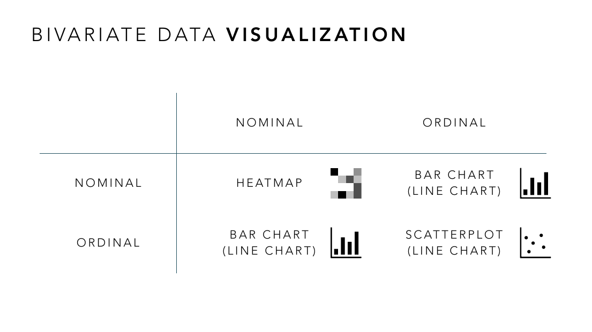
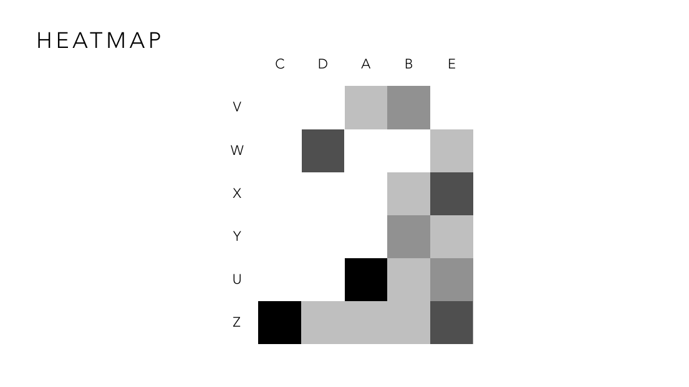
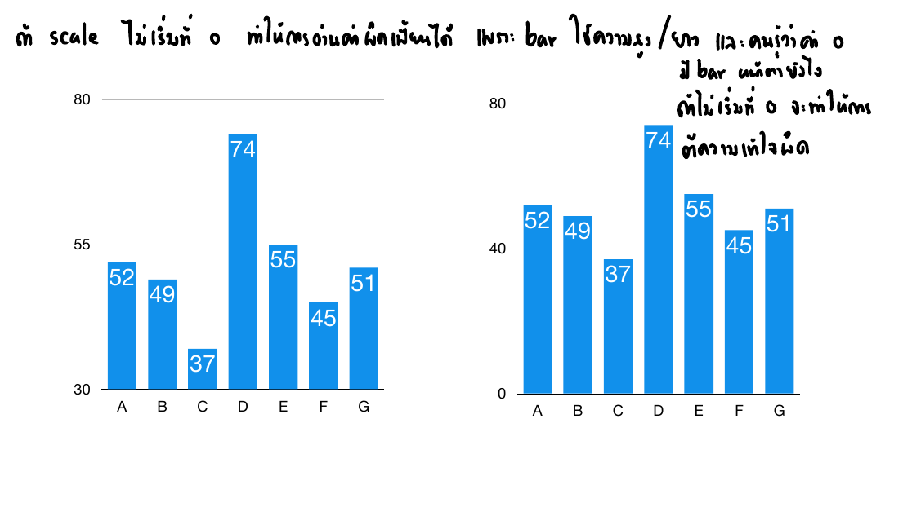
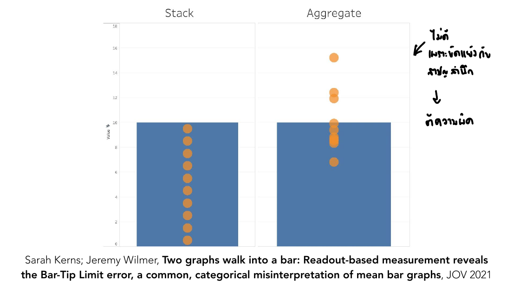
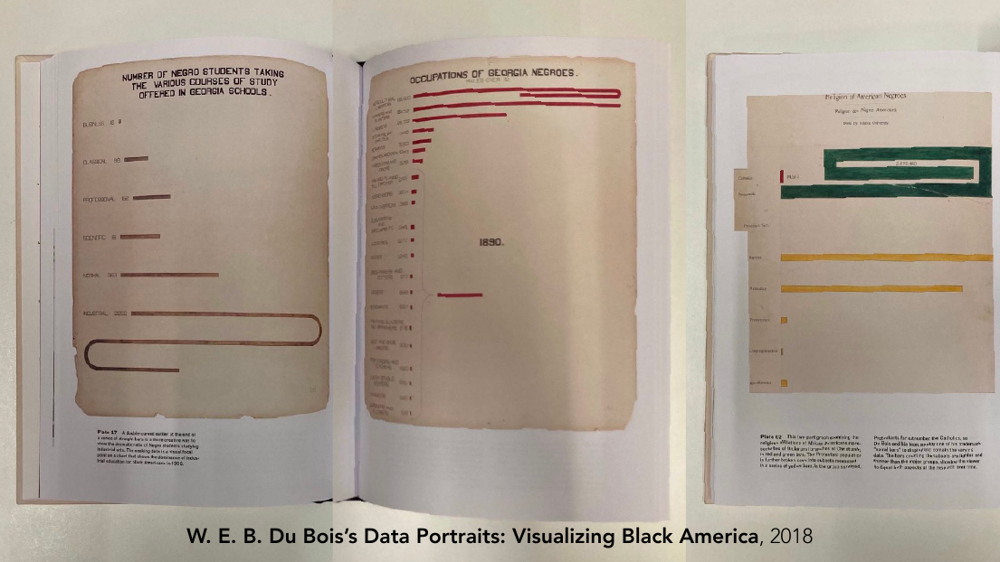
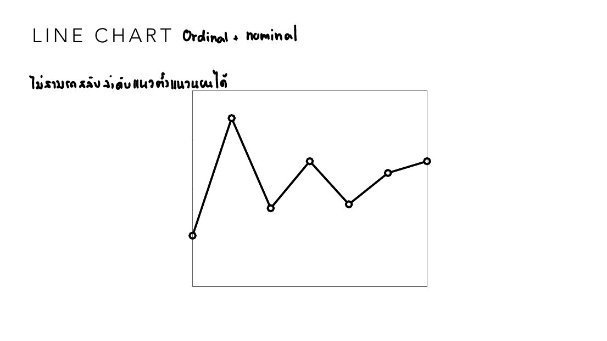
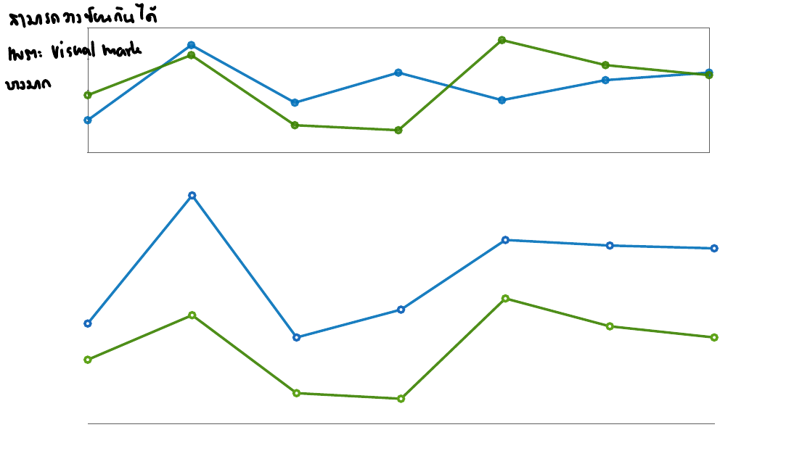
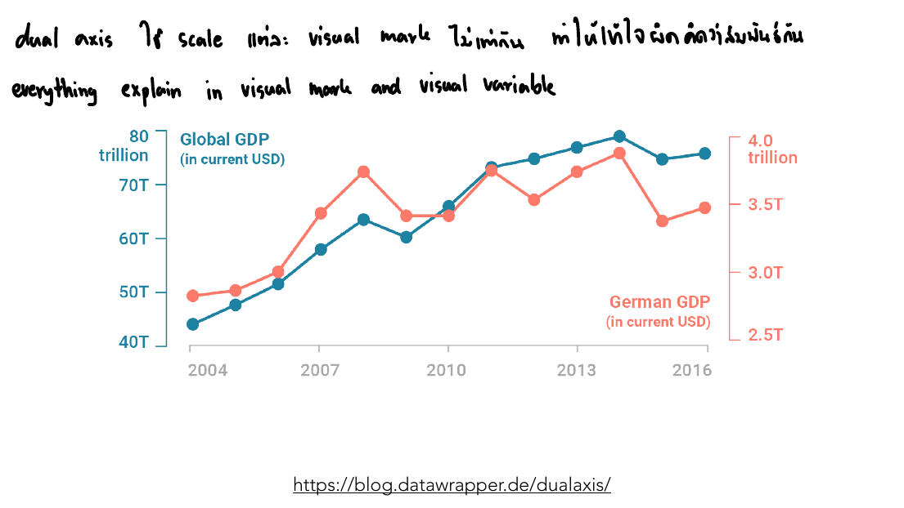
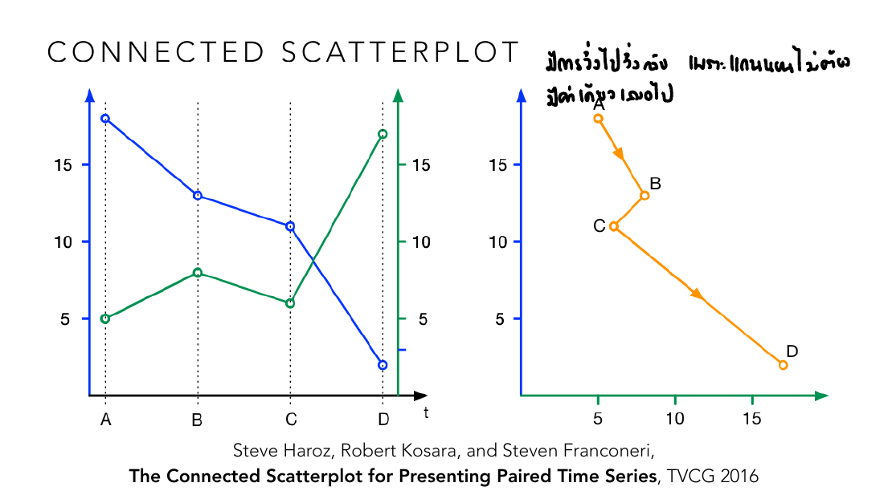
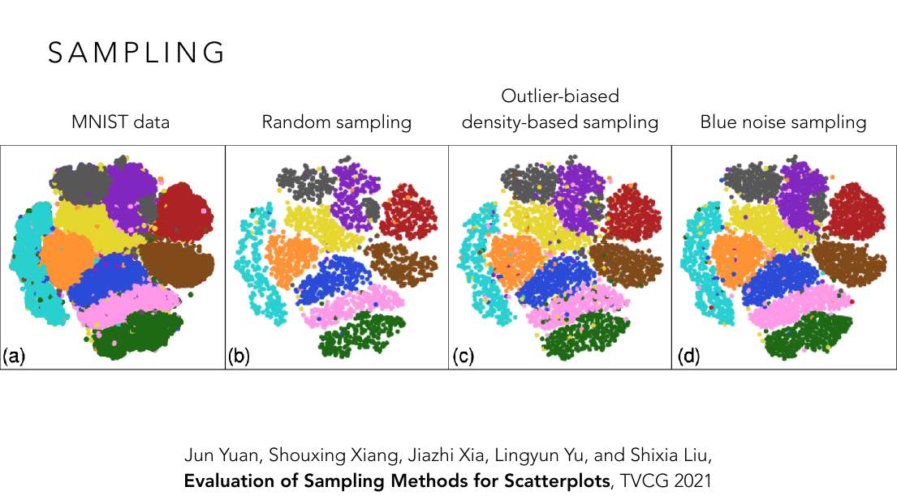

vis-5-bivariate.pdf
บทเรียนที่หนักที่สุดในครึ่งแรกของวิชา — ครอบคลุมชาร์ตหลักที่ใช้เปรียบเทียบข้อมูล 2 ตัวแปร (heatmap, bar chart, line chart, scatter plot) พร้อมงานวิจัยที่ชี้กับดักการรับรู้ของแต่ละชนิด ซึ่งเป็นเนื้อหาที่ข้อสอบแบบ "วิเคราะห์ visualization ที่ให้มา" ชอบถามมากที่สุด.
Bivariate = แต่ละ sample มี 2 attribute (เช่น Name & Nickname, Country & GDP, Height & Weight) Slide ให้สูตรจับคู่ชาร์ตกับประเภทข้อมูลตรง ๆ:
| Nominal | Ordinal | |
|---|---|---|
| Nominal | Heatmap | Bar chart (Line chart) |
| Ordinal | Bar chart (Line chart) | Scatter plot (Line chart) |

ลองใช้ matrix นี้กับข้อมูลจริง 3 คู่: "แผนก × เพศ" (nominal ทั้งคู่) ต้องใช้ Heatmap เพราะไม่มีแกนไหนไล่ลำดับได้ ใช้แค่สีเข้ม-อ่อนบอกจำนวนคนในแต่ละช่องแผนก×เพศ — "แผนก × เงินเดือน" (nominal×ordinal) ใช้ Bar chart ได้เลย แกนหนึ่งเป็นหมวดหมู่แผนก อีกแกนเป็นตัวเลขเงินเดือน — "อายุงาน × เงินเดือน" (ordinal×ordinal ทั้งคู่) ใช้ Scatter plot เพื่อดูว่าอายุงานเยอะขึ้นเงินเดือนสูงขึ้นตามไหม สังเกตว่า matrix นี้ตอบคำถาม "จะเลือกชาร์ตอะไร" ได้จากแค่ดูว่าแต่ละคอลัมน์เป็น nominal หรือ ordinal เท่านั้น ไม่ต้องเดา.
Jacques Bertin เสนอ "reorderable matrices" — heatmap ข้อมูลชุดเดียวกัน แต่สลับลำดับแถว/คอลัมน์ สามารถเผย block pattern/cluster ที่มองไม่เห็นเลยถ้าเรียงตามตัวอักษรเฉย ๆ (slide สาธิตด้วยตารางเดียวกันที่เรียงคนละแบบ ให้ผลการมองต่างกันมาก).

ลองนึกภาพ heatmap เดิมที่เรียงแถว/คอลัมน์ตามตัวอักษร A-B-C-D-E: ช่องเข้มที่จริงแล้วอยู่ติดกันเป็นกลุ่ม (เช่น A กับ D มักเข้มพร้อมกัน) จะถูกเรียงห่างกันคนละที่ในตาราง มองไม่ออกว่ามันเป็นกลุ่มเดียวกัน แต่พอสลับลำดับคอลัมน์ใหม่ให้ A, D มาอยู่ติดกัน (ไม่สนใจตัวอักษร สนใจแค่ว่าค่าคล้ายกันไหม) ช่องเข้มที่เคยกระจัดกระจายจะรวมตัวกันเป็นแถบทแยงชัดเจนทันที — นี่คือเหตุผลว่าทำไม heatmap แบบ default (เรียง A-Z) ถึงมักดู "รก ไม่มี pattern" ทั้งที่ pattern มีอยู่จริง แค่ถูกลำดับตัวอักษรบังไว้ ก่อนสรุปว่า "ข้อมูลชุดนี้ไม่มี pattern" ต้องลองสลับลำดับดูก่อนเสมอ.

ลองคำนวณตัวเลขจริงในสไลด์: ค่า C=37 กับ D=74 ต่างกันแค่ 2 เท่าพอดี (74÷37=2) ถ้าแกน y เริ่มที่ 0 ตามปกติ แท่ง D ก็ควรสูงเป็น 2 เท่าของแท่ง C พอดีเหมือนตัวเลข — แต่ถ้าแกน y เริ่มที่ 30 แทน ความสูงที่วาดจริงของ C จะเหลือแค่ 37-30=7 หน่วย ส่วน D จะเหลือ 74-30=44 หน่วย นั่นคือแท่ง D จะดูสูงกว่าแท่ง C ถึง 44÷7 ≈ 6.3 เท่า ทั้งที่ตัวเลขจริงต่างกันแค่ 2 เท่า — นี่คือคณิตศาสตร์เบื้องหลังคำเตือน "ต้องเริ่มแกน y ที่ 0" ไม่ใช่แค่กฎลอย ๆ แต่เพราะการตัดฐานออกทำให้อัตราส่วนความสูงที่ตาเห็นบิดเบือนไปจากอัตราส่วนตัวเลขจริงเสมอ.
กับดักที่สามคือ Bar-Tip Limit error — คนอ่านมักเข้าใจผิดว่าปลายแท่ง (bar tip) คือขอบเขตสูงสุดที่ข้อมูลจะไปถึงได้ ทั้งที่จริง ๆ แท่งอาจแสดงแค่ค่าเฉลี่ย:

ทั้งสองแท่งสูงเท่ากันเป๊ะที่ค่า 10 แต่ความหมายต่างกันโดยสิ้นเชิง: แผงซ้าย "Stack" คือ bar chart ที่แท่งแสดงผลรวม/สูงสุดจริง จุดข้อมูลย่อยทุกจุด (วงกลมส้ม) จึงถูกวางซ้อนกันอยู่ใต้ปลายแท่งพอดี ไม่มีจุดไหนเกินไปกว่านั้น — แผงขวา "Aggregate" คือ bar chart ที่แท่งแสดงแค่ค่าเฉลี่ย (mean=10) ของกลุ่มข้อมูล จุดข้อมูลจริงแต่ละจุดกลับกระจายทั้งเหนือแท่ง (สูงถึง ~15) และใต้แท่ง (ต่ำถึง ~7) เพราะค่าเฉลี่ยไม่ใช่ค่าสูงสุด — ปัญหาคือคนอ่านทั่วไปมักตีความทั้งสองแบบเหมือนกันหมด คือคิดว่า "ปลายแท่งคือขีดสุดที่ข้อมูลไปถึง" (แบบซ้าย) ทั้งที่แผงขวาจริง ๆ แล้วมีข้อมูลเกินปลายแท่งไปเยอะ — ถ้า bar chart แสดงค่าเฉลี่ย/มัธยฐาน (aggregate) โดยไม่บอกไว้ชัดเจนหรือไม่มี error bar กำกับ ผู้อ่านจะเข้าใจผิดคิดว่านั่นคือขอบเขตบนของข้อมูลทั้งหมดโดยอัตโนมัติ — บทเรียนคือ bar chart ที่แสดงค่าเฉลี่ยควรมี error bar หรือจุดข้อมูลจริงกำกับไว้เสมอ ไม่งั้นผู้อ่านจะตีความผิดอย่างเป็นระบบ.
ปัญหา "แท่งยาวเกินจะวาดพอดี" ไม่ใช่เรื่องใหม่ — ย้อนไปถึงยุค 1900 นักสังคมวิทยา W.E.B. Du Bois ก็เจอปัญหาเดียวกันตอนวาดข้อมูลด้วยมือ:

สังเกตแผงซ้าย — bar chart แสดงจำนวนนักเรียนผิวดำที่เรียนแต่ละสาขาวิชาในโรงเรียนรัฐจอร์เจีย แท่ง "Industrial" ยาวกว่าทุกแท่งมากจนวาดตรง ๆ ไม่พอหน้ากระดาษ Du Bois จึงแก้ปัญหาด้วยการให้แท่งนั้นโค้งม้วนกลับเป็นวงสปริงแทนที่จะตัดขอบทิ้งหรือย่อสเกลทั้งชาร์ต — นี่คือต้นแบบของเทคนิคที่สไลด์อ้างถึงในชื่อ "Du Bois Wrapped Bar Chart" (Karduni et al., CHI 2020) ซึ่งงานวิจัยยุคปัจจุบันนำแนวคิดนี้กลับมาทำให้เป็นระบบ สำหรับข้อมูลที่มีบางค่า "สูงผิดปกติ" (disproportionate) จนทำให้แท่งอื่นที่เหลือแบนจนอ่านไม่ออกถ้าใช้สเกลเดียวกันตรง ๆ — บทเรียนคือปัญหา "ค่าที่สูง/ต่ำผิดปกติบิดเบือนสเกลของทั้งชาร์ต" ไม่ใช่ปัญหาใหม่จากยุคดิจิทัล แต่เป็นปัญหาคลาสสิกที่มีทางแก้สร้างสรรค์มาตั้งแต่ 100 กว่าปีก่อนแล้ว.
Line chart บอกเป็นนัยว่าข้อมูลต่อเนื่องและมีค่าสัมบูรณ์ (continuous and absolute) — ห้ามใช้พร่ำเพรื่อกับข้อมูล categorical ที่ไม่มีลำดับต่อเนื่องจริง (เช่นลากเส้นเชื่อมหมวดหมู่ A-B-C-D-E ที่ไม่มีความต่อเนื่องเชิงปริมาณ). เทคนิคจัดการที่สำคัญ:

ลองเทียบ 2 กรณี: เส้นกราฟยอดขายรายเดือน (ม.ค.-ธ.ค.) ลากเส้นเชื่อมได้ถูกต้อง เพราะเดือนมีลำดับต่อเนื่องจริง เส้นที่ลาดขึ้นระหว่างสองเดือนสื่อความหมายว่า "ค่ากำลังโตขึ้นระหว่างทาง" ได้จริง แต่ถ้าเอาข้อมูล "ยอดขายแยกตามสาขา" (สาขา A, B, C, D ไม่มีลำดับ) มาลากเส้นเชื่อมแบบเดียวกัน เส้นที่ลาดขึ้นระหว่างสาขา A กับ B จะดูเหมือนสื่อว่า "มีค่ากึ่งกลางระหว่างทาง" ทั้งที่ไม่มีความหมายอะไรเลย (ไม่มี "สาขา A.5" อยู่ระหว่าง A กับ B) — และถ้าสลับลำดับสาขาบนแกน x ใหม่ (เช่น B-D-A-C) รูปร่างเส้นทั้งเส้นจะเปลี่ยนไปคนละแบบทันที ต่างจาก bar chart ที่สลับลำดับแท่งแล้วความหมายรวมยังเหมือนเดิม.

ข้อมูลตัวเลขในทั้งสองเวอร์ชันนี้เหมือนกันเป๊ะ ต่างกันแค่สัดส่วนกรอบที่วาด — ในเวอร์ชันกรอบเตี้ยกว้าง ช่วงที่เส้นน้ำเงินตัดกับเส้นเขียว 2 ครั้งจะดูคลุมเครือว่าจุดตัดอยู่ตรงไหนกันแน่ แต่พอยืดกรอบให้สูงขึ้น (banking to 45°) จุดตัดเดิมกลับมองเห็นชัดเจนและแยกช่วงขึ้น-ลงของแต่ละเส้นได้ทันที — ทั้งที่ไม่ได้แก้ตัวเลขสักตัว นี่คือเหตุผลที่ Cleveland เสนอกฎ "ปรับกรอบจนความชันเฉลี่ยรวมของทุกเส้นอยู่ที่ราว 45 องศา" เป็นจุดที่ตาคนแยกความชันต่างระดับได้แม่นที่สุด เอาไว้ใช้ตรวจว่า line chart ที่เจอมีสัดส่วนกรอบเหมาะสมหรือแบน/สูงเกินไปจนแนวโน้มดูผิดเพี้ยน.

ตัวอย่างจริงในสไลด์: เส้น "Global GDP" ใช้แกนซ้าย (40-80 ล้านล้านดอลลาร์) เส้น "German GDP" ใช้แกนขวา (2.5-4.0 ล้านล้านดอลลาร์) — คนออกแบบเลือกช่วงตัวเลขของทั้งสองแกนให้เส้นทั้งคู่ "บังเอิญ" ทาบกันพอดีบนภาพ ทั้งที่ถ้าลองขยับแกนขวาให้เริ่มที่ 0-10 ล้านล้านแทน (แทนที่จะเป็น 2.5-4.0) เส้นสีส้มจะแบนราบจนแทบมองไม่เห็นความเคลื่อนไหวเลย — ลองคิดกลับด้าน: ด้วยแกนที่ independent กันแบบนี้ คนออกแบบสามารถเลือกช่วงตัวเลขแกนขวาให้เส้นสีส้ม "ขึ้นพร้อมกัน" หรือ "สวนทางกัน" กับเส้นสีน้ำเงินก็ได้ตามใจ นี่คือเหตุผลที่ dual-axis อันตราย: ความสัมพันธ์ที่เห็นบนภาพถูกกำหนดโดยคนเลือกสเกล ไม่ใช่โดยข้อมูลจริง.

ลองเทียบวิธีตอบคำถาม "ตัวแปร X กับ Y สัมพันธ์กันยังไงเมื่อเวลาผ่านไป" ด้วย 2 วิธี: แผงซ้าย (line chart ปกติ) ต้องแยกวาด 2 เส้นคนละแกน แล้วให้คนดูเทียบเองในใจว่าตอน X ขึ้น Y ทำอะไร — ทำได้แต่ต้องอาศัยความจำช่วย แผงขวา (connected scatterplot) เอาค่า X,Y ของแต่ละเวลามาเป็นจุดเดียวบนระนาบเดียวกันเลย แล้วลากเส้นบอกทิศทาง A→B→C→D ทำให้เห็น "รูปร่างความสัมพันธ์" ได้ในภาพเดียว แต่ก็มีต้นทุน: เพราะแกนเวลาไม่ได้โผล่มาตรง ๆ (ซ่อนอยู่ในทิศทางลูกศร) เส้นทางจาก A ไป D อาจวกกลับไปกลับมา (ผ่านจุดที่เคยผ่านแล้วในทิศทางใกล้เคียงเดิม) ทำให้ดูเหมือนเส้นพันกันเอง ทั้งที่จริง ๆ คือเวลาเดินหน้าไปเรื่อย ๆ.
Cleveland, Diaconis & McGill (1982) พบว่า ยิ่งบีบสเกลแกนให้จุดกระจายชันขึ้น ยิ่งทำให้คนมองว่าข้อมูลมี correlation สูงขึ้น ทั้งที่ตัวเลขสหสัมพันธ์จริงไม่เปลี่ยนเลย — aspect ratio ของ scatter plot จึงไม่ใช่แค่เรื่องความสวยงาม แต่กระทบการตีความ correlation โดยตรง.
เมื่อ scatter plot มีจุดข้อมูลเยอะมากจนทับซ้อนกัน (overplotting) มี 3 เทคนิคหลักในการแก้:

ลองสมมติว่ามีข้อมูล 60,000 จุดที่ทับกันจนกลายเป็นก้อนทึบ (แผง MNIST เต็ม) — ถ้าสุ่มทิ้งแบบ Random sampling ธรรมดา จุดที่อยู่ "ขอบ" ของแต่ละกลุ่ม (ซึ่งมีน้อยกว่าจุดตรงกลางกลุ่มอยู่แล้ว) มีโอกาสถูกสุ่มทิ้งไปเยอะกว่าสัดส่วน ทำให้ขอบเขตกลุ่มเบลอ แยกกลุ่มที่อยู่ติดกันได้ยากขึ้น — Outlier-biased sampling แก้ปัญหานี้ตรง ๆ ด้วยการ "จงใจเก็บจุดขอบไว้ให้มากกว่า" จุดตรงกลางที่ซ้ำซ้อนกันอยู่แล้วตัดทิ้งได้โดยไม่เสียข้อมูล ผลคือขอบเขตกลุ่มยังคมชัดทั้งที่จุดรวมลดลงเท่ากับ Random sampling — บทเรียนคือ "สุ่มทิ้งเท่ากัน" ไม่ได้แปลว่า "รักษาข้อมูลได้เท่ากัน" วิธีเลือกว่าจะทิ้งจุดไหนสำคัญพอ ๆ กับจะทิ้งกี่จุด.
d3.scaleLinear().domain([0, max]).range([0, pixelWidth]) คือการสร้าง "ฟังก์ชัน" ที่แปลงค่าข้อมูลจริง (domain) เป็นตำแหน่งพิกเซล (range) โดยอัตโนมัติ — เป็นกลไกเดียวกับที่ทำให้แกนของชาร์ตทุกชนิด "ตรง" กับข้อมูลจริง (เชื่อมกับ Truthful ที่เรียนมาตั้งแต่ Lesson 2).
d3.scaleLinear().domain([0, 100]).range([0, 400]) ทำหน้าที่อะไร?ไล่ทุกหน้าของ vis-5-bivariate.pdf — หน้าที่มี ✓ ถูกอธิบายและ/หรือใส่รูปในเนื้อหาข้างบนแล้ว ที่เหลือเป็นตัวอย่างประกอบ/ลิงก์อ้างอิง (etc).
| หน้า | เนื้อหา | สถานะ |
|---|---|---|
| 1–2 | ปก + ตารางเรียนทั้งเทอม | etc — บริบทวิชา |
| 3–17 | โค้ด D3/Altair ทำ bar chart ต่อจาก Lesson 4 (scaleLinear, scaleBand, helper functions, แกน x/y แบบ vertical/horizontal, D3: AXIS) | ✓ หัวข้อ 7 (สรุปแนวคิด scale แล้ว รายละเอียดโค้ดเต็มไม่ทำ quiz แยก) |
| 18 | นิยาม Bivariate Data (2 attribute ต่อ sample) | ✓ หัวข้อ 1 |
| 19 | Chart Selection Matrix (Nominal/Ordinal × Nominal/Ordinal) | ✓ หัวข้อ 1 (มีรูป) |
| 20–24 | Heatmap เกริ่นนำ + ตัวอย่างจริง (ชื่อคนอเมริกันยอดนิยม, xkcd 2420) | ✓ ส่วนหนึ่งของหัวข้อ 2 |
| 25–28 | Heatmap จัดเรียงหลายแบบเปรียบเทียบกัน | ✓ หัวข้อ 2 (มีรูป) |
| 29–31 | อ้างอิง Bertin's reorderable matrices + ตัวอย่างเสริม (forecast correlation, spotify data) | ✓ หัวข้อ 2 (อ้างอิงในเนื้อหาแล้ว) |
| 32–39 | Bar chart ตัวอย่างจัดเรียงหลายแบบ + เครื่องมือตรวจ misleading axes | ✓ ส่วนหนึ่งของหัวข้อ 3 |
| 40 | Bar chart แกน y เริ่ม 0 เทียบกับ truncated | ✓ หัวข้อ 3 (มีรูป) |
| 41–46 | ตัวอย่าง/อ้างอิง truncated axis เพิ่มเติม (Correll, Bertini & Franconeri 2020) | ✓ หัวข้อ 3 (อ้างอิงในเนื้อหาแล้ว) |
| 47–49 | ตัวอย่าง CO2 dataset สองสเกล + อ้างอิงประวัติศาสตร์ Felix Auerbach 1914 | etc — ตัวอย่างประกอบเรื่องสเกลกราฟ นอกขอบเขต quiz |
| 50 | W. E. B. Du Bois's Data Portraits: Visualizing Black America | ✓ หัวข้อ 3 (มีรูป) |
| 51 | อ้างอิง Du Bois Wrapped Bar Chart (Karduni et al., CHI 2020) | ✓ ส่วนหนึ่งของหัวข้อ 3 |
| 52 | Bar-Tip Limit error: Stack vs Aggregate (Kerns & Wilmer, JOV 2021) | ✓ หัวข้อ 3 (มีรูป) |
| 53 | อ้างอิงเพิ่มเติม: What's really wrong with bar graphs of mean values | ✓ ส่วนหนึ่งของหัวข้อ 3 |
| 54–55 | Line Chart: Ordinal + Nominal ตัวอย่าง | ✓ หัวข้อ 4 (มีรูป) |
| 56–63 | Line chart กับข้อมูลที่ดูต่อเนื่อง (อุณหภูมิ, ราคา) + อ้างอิง Hollands & Spence 1992 | ✓ หัวข้อ 4 (สรุปแนวคิด "implies continuous and absolute" แล้ว) |
| 64–69 | ตัวอย่าง/อ้างอิงเพิ่มเติม (Musk audience, Line Graph or Scatter Plot?, LineSmooth) | etc — งานวิจัยเชิงลึกเรื่อง line chart นอกขอบเขต quiz หลัก |
| 70–73 | ตัวอย่าง bar chart เปรียบเทียบ visual variable + กราฟ "High school graduation rates" ของ Cairo (แกน y ไม่เริ่มที่ 0%) | etc — ตัวอย่างเสริมแนวคิดเดียวกับหัวข้อ 3 |
| 74–75 | อ้างอิง Surfacing Visualization Mirages + ตัวอย่าง overview chart | etc — อ้างอิงล่วงหน้า (ใช้จริงใน Lesson 6 เรื่อง radar chart) |
| 76–78 | เกริ่นนำ Banking to 45 Degrees (Cleveland 1993) | ✓ ส่วนหนึ่งของหัวข้อ 4 |
| 79–80 | Banking to 45 Degrees ไดอะแกรมเปรียบเทียบ | ✓ หัวข้อ 4 (มีรูป) |
| 81–82 | ตัวอย่าง Streamgraph | etc — เทคนิคเสริม ไม่ได้อธิบายในเนื้อหา (คล้าย stacked area chart) |
| 83–97 | ตัวอย่าง/อ้างอิงเสริมเรื่อง time series (Franconeri et al., forecast, "one set of data many stories", military expenditure) | etc — ตัวอย่างประกอบ นอกขอบเขต quiz หลัก |
| 98 | Dual-axis อันตราย | ✓ หัวข้อ 4 (มีรูป) |
| 99–104 | ตัวอย่าง dual-axis เพิ่มเติม (Datawrapper, Economist "mistakes we've drawn", Axios) | ✓ หัวข้อ 4 (อ้างอิงในเนื้อหาแล้ว) |
| 105–107 | Connected Scatter Plot พร้อม pigtail | ✓ หัวข้อ 4 (มีรูป) |
| 108–113 | ตัวอย่างเพิ่มเติม (nytimes/washington post gas prices, Sizing the Horizon citation) | etc — ตัวอย่างประกอบ |
| 114 | Line Chart: สรุปประเด็นสำคัญ (แนวนอน, ต่อเนื่อง, ไวต่อ noise, ไม่ต้องเริ่ม 0 แต่เลี่ยง dual-axis) | ✓ สรุปรวมหัวข้อ 4 ทั้งหมด |
| 115–121 | Scatter plot ตัวอย่าง + ลิงก์ประกอบ (FT election game, V-Dem, WEF Future of Jobs) | ✓ ส่วนหนึ่งของหัวข้อ 5 |
| 122 | Scatter Plot: Correlation examples (Wikipedia) | ✓ หัวข้อ 5 |
| 123–126 | guessthecorrelation.com + อ้างอิง Cleveland, Diaconis & McGill 1982 | ✓ หัวข้อ 5 (อ้างอิงในเนื้อหาแล้ว) |
| 127 | Shuffling | ✓ หัวข้อ 6 |
| 128–129 | Binning | ✓ หัวข้อ 6 |
| 130–132 | Sampling (Random/Density-based/Blue-noise/Stippling) | ✓ หัวข้อ 6 (มีรูป) |
สงสัยตรงไหน ถามได้เลยในแชท — ผมเป็นผู้สอนของคุณ ถามซ้ำได้ ถามลึกได้ ไม่ต้องเกรงใจ.